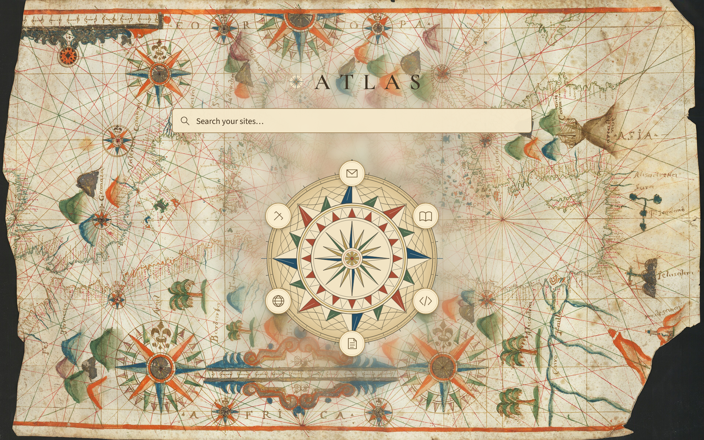

01
Open full size ↗The Mediterranean on vellum
Oliva family · 1621–1665

Best nautical fit. Multicolored wind roses and the lower cartouche survive around the softened center. The red and green rhumb lines remain strong.
Full uncropped reproduction · Source & public-domain statement
Wide-screen crop retains 97.3% of source area. No recoloring, collage or generated artwork.